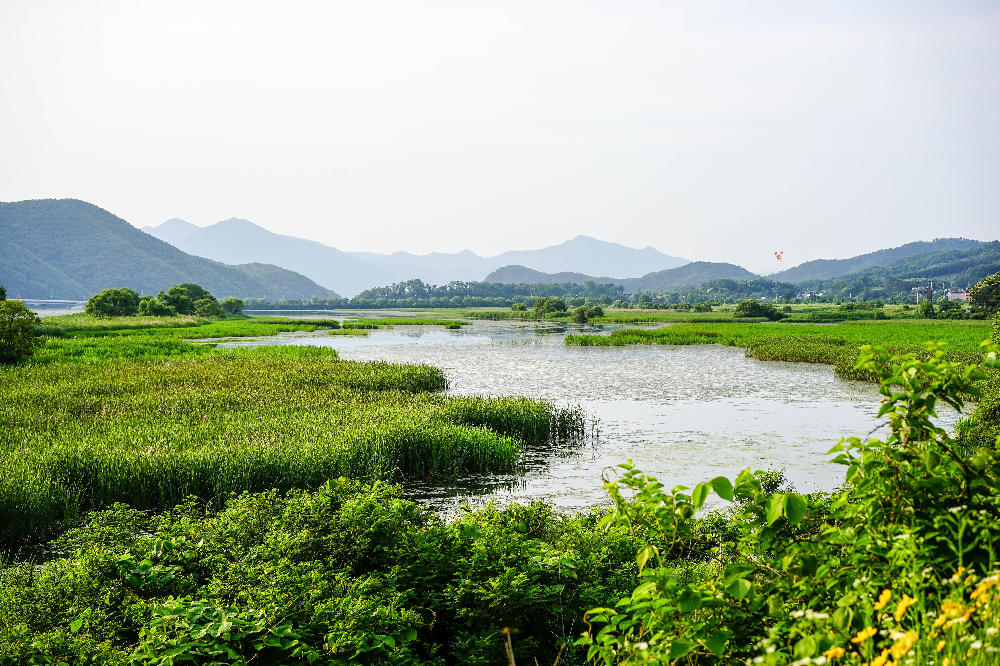

Σημασία υδροβιότοπων
.jpg)
Οι υγρότοποι είναι σημαντικοί όχι μόνο για το περιβάλλον αλλά και για τις τοπικές κοινωνίες και οικονομίες γιατί:
- Συγκεντρώνουν μεγάλο αριθμό ειδών, όχι μόνο αυτά που είναι ευρύτερα γνωστά, όπως τα φλαμίνγκο, οι πελεκάνοι, οι ερωδιοί,
οι πελαργοί, οι πάπιες, αλλά και είδη που είναι σημαντικά για όλη την τροφική αλυσίδα. Οι υγρότοποι θεωρούνται σήμερα
«τράπεζες γενετικού υλικού» επειδή εκεί απαντάται μεγάλο ποσοστό του φυσικού πλούτου. Πολλά ζώα (μεταξύ άλλων πολλά είδη πουλιών)
αναζητούν την τροφή τους σε υγρότοπους, μένουν εκεί μόνιμα ή ευκαιριακά, ξεκουράζονται κατά το μεταναστευτικό τους ταξίδι,
αναπαράγονται. Η καταστροφή ή υποβάθμιση ενός υγρότοπου σημαίνει και τη μείωση της βιοποικιλότητας γενικότερα.
- Συμβάλλουν στον καθαρισμό των νερών από ρύπους (λειτουργούν ως φίλτρα), στην προστασία από την υφαλμύρωση
(είσοδος νερού της θάλασσας στον υδροφόρο ορίζοντα) και στον εμπλουτισμό του υπόγειου υδροφόρου ορίζοντα. Η αποξήρανση της
Κάρλας είχε, για παράδειγμα, επιπτώσεις συνολικά στα υπόγεια νερά της περιοχής.
- Προστατεύουν από τις πλημμύρες και από τις επιπτώσεις ακραίων καιρικών φαινομένων.
- Δεσμεύουν στα φυτά και στα ιζήματα διοξείδιο του άνθρακα από την ατμόσφαιρα (αέριο που συμβάλλει στην αλλαγή του κλίματος).
- Ρυθμίζουν τη θερμοκρασία, ιδιαίτερα παράκτιων περιοχών, διατηρώντας τις διακυμάνσεις (ημερήσιες, εποχικές, ετήσιες)
της θερμοκρασίας σε πιο ήπιο επίπεδο. Η αποξήρανση ενός υγρότοπου μπορεί να κάνει πιο ψυχρούς τους χειμώνες και πιο θερμά
τα καλοκαίρια.
- Μετατρέπουν την ηλιακή ακτινοβολία, το διοξείδιο του άνθρακα και διάφορα στοιχεία σε οργανική ύλη και θρεπτικά υλικά
που στηρίζουν τις τροφικές αλυσίδες. Δικαίως οι υγρότοποι θεωρούνται από τα πιο παραγωγικά σε βιομάζα οικοσυστήματα.
- Υποστηρίζουν την αλιεία, τη γεωργία και την κτηνοτροφία. Μερικοί υγρότοποι, όπως οι λιμνοθάλασσες Μεσολογγίου -Αιτωλικού,
, είναι (ήταν) πλούσιοι σε ιχθυοπανίδα. Σε υγροτοπικούς βοσκότοπους έβοσκαν παλιότερα βουβάλια (σε ορισμένες περιοχές στον Αξιό,
Γαλλικό, Πρέσπες, Νέστο, Βιστωνίδα κα βόσκουν ακόμα).
- Προσφέρονται για επιστημονική έρευνα, οικο-τουρισμό, ξεναγήσεις, επισκέψεις εκπαιδευτικού χαρακτήρα, παρατηρήσεις
πουλιών- φυσικά κάτω από προϋποθέσεις λόγω της ευαισθησίας τους ως οικοσυστήματα.
Οι υδροβιότοποι στην Ελλάδα

Η χώρα μας διαθέτει αρκετούς υδροβιότοπους, η συντριπτική πλειονότητα των οποίων βρίσκεται στο βόρειο τμήμα της.
Συνολικά, στην απογραφή που έγινε από το Ελληνικό Κέντρο Βιοτόπων Υγρότοπων το 2000 καταγράφηκαν 411 υδροβιότοποι
σε όλη τη χώρα συνολικής έκτασης 2 εκατομμυρίων στρεμμάτων. Δυστυχώς μόλις 10 από αυτούς χαρακτηρίστηκαν ως
υδροβιότοποι Διεθνούς Σημασίας σύμφωνα με τη Σύμβαση Ραμσάρ. Σε αυτούς περιλαμβάνονται οι λίμνες Βιστονίδα, μικρή Πρέσπα,
Κορώνεια και Βόλβη. Στην κατηγορία αυτή ανήκουν επίσης τα Δέλτα του Έβρου, του Νέστου και του Αξιού. Τη δεκάδα
συμπληρώνουν οι λιμνοθάλασσες του Κοτυχίου και του Μεσολογγίου και ο κόλπος του Αμβρακικού.
Στα τρεις χιλιάδες περίπου μικρά και μεγάλα νησιά της Ελλάδας συναντώνται πολλοί μικροί υδροβιότοποι.
Οι συγκεκριμένοι υδροβιότοποι φιλοξενούν κατά περιόδους χιλιάδες μεταναστευτικά πουλιά που αρέσκονται στο
να ξεκουράζονται σε αυτούς. Η κατάσταση των υδροβιότοπων αυτών αποτελεί επίσης δείκτη της ποιότητας του νερού
νησιά αυτά. Οι νησιωτικοί υδροβιότοποι διαδραματίζουν καθοριστικό ρόλο στην οικονομία και το φυσικό περιβάλλον των νησιών.
Ωστόσο, κυρίως λόγω του μικρού μεγέθους τους έχουν πλέον καταταχθεί στα απειλούμενα με υποβάθμιση οικοσυστήματα.
Το πρόβλημα επιδεινώνεται από ανθρώπινες δραστηριότητες όπως εκχερσώσεις, επιχωματώσεις, δημιουργία δρόμων
αλλά και από την αδιαφορία των κατοίκων και των τοπικών αρχών.
Σύμβαση Ραμσαρ για την Ελλάδα
.jpg)
Η αφύπνιση και η ενημέρωση των πολιτών για την αξία των υγροτόπων τόσο στο περιβάλλον όσο και στη διατήρηση
της οικολογικής ισορροπίας επιδιώκεται κάθε χρόνο στις 2 Φεβρουαρίου από ποικίλους οργανισμούς και
περιβαλλοντικές οργανώσεις. Κι αυτό γιατί η 2α Φεβρουαρίου έχει καθιερωθεί ως Παγκόσμια Ημέρα Υγροτόπων.
Την ημέρα εκείνη το 1971 υπογράφηκε στην πόλη Ραμσάρ του Ιράν η διεθνής σύμβαση για την προστασία των υγροτόπων.
Η Ελλάδα υπέγραψε τη Σύμβαση Ραμσάρ το 1974 και ενέταξε στον Κατάλογο Υγροτόπων Διεθνούς Σημασίας 10 υγροτόπους:
το Δέλτα Έβρου, τις Λίμνες Βιστωνίδα - Ισμαρίδα, τη λιμνοθάλασσα Πόρτο Λάγος και τις λιμνοθάλασσες Θράκης,
το Δέλτα Νέστου, τη Λίμνη Κερκίνη, τις Λίμνες Κορώνεια και Βόλβη, το Δέλτα Αξιού - Λουδία - Αλιάκμονα και
Αλυκής Κίτρους, τις λίμνες Μικρή και Μεγάλη Πρέσπα, τον Αμβρακικό Κόλπο, τις Λιμνοθάλασσες Μεσολογγίου -
Αιτωλικού και το Δάσος Στροφυλιάς - Λιμνοθάλασσα Κοτύχι. Σημειώνεται ότι, σύμφωνα με το άρθρο 3 της Σύμβασης,
η χώρα οφείλει να προστατεύσει το σύνολο των υγροτόπων που βρίσκονται στην επικράτειά της και όχι μόνο
αυτούς που χαρακτηρίζονται ως διεθνούς σημασίας.
Όπως ορίζει η "Σύμβαση για τους Υγροτόπους Διεθνούς Σημασίας ως Ενδιαιτήματος Υδροβίων Πουλιών", η Σύμβαση Ραμσάρ δηλαδή,
ο ορισμός των υγροτόπων διατυπώνεται ως εξής: "υγρότοποι είναι οι φυσικές ή τεχνητές περιοχές αποτελούμενες από έλη
με ποώδη βλάστηση, από μη αποκλειστικώς ομβροδίαιτα έλη με τυρφώδες υπόστρωμα , από τυρφώδεις γαίες ή από νερό.
Οι περιοχές αυτές είναι μονίμως ή προσωρινώς κατακλυζόμενες με νερό το οποίο είναι στάσιμο ή ρέον, γλυκό, υφάλμυρο
ή αλμυρό και περιλαμβάνουν επίσης εκείνες που καλύπτονται από θαλασσινό νερό το βάθος του οποίου κατά τη ρηχία
δεν υπερβαίνει τα έξι μέτρα". Κατά την ίδια σύμβαση στους υγροτόπους μπορούν να περιλαμβάνονται και οι «παρόχθιες
ή παράκτιες ζώνες που γειτονεύουν με υγροτόπους ή με νησιά ή με θαλάσσιες υδατοσυλλογές, που έχουν βάθος μεγαλύτερο
από έξι μέτρα κατά τη ρηχία αλλά βρίσκονται μέσα στα όρια του υγροτόπου όπως αυτός καθορίζεται ανωτέρω».
Σύμφωνα με στοιχεία που προέκυψαν από την απογραφή που διεξήγαγε το Ελληνικό Κέντρο Βιοτόπων- Υγροτόπων (ΕΚΒΥ),
για τα υγροτοπικά οικοσυστήματα της Ελλάδας στο ηπειρωτικό τμήμα της χώρας στο πλαίσιο του προγράμματος WetMainAreas
"Βελτίωση της αποτελεσματικότητας στη διατήρηση των υγροτόπων της Βαλκανικής Μεσογείου", που χρηματοδοτείται από
το INTERREG BalkanMed, η Ελλάδα διαθέτει 1.383 υγρότοπους και η συνολική τους έκταση είναι μεγαλύτερη από 200.000 εκτάρια.
Τη μεγαλύτερη έκταση καταλαμβάνουν οι παράκτιοι υγρότοποι (εκβολές, δέλτα κ.λπ.), οι φυσικές και οι τεχνητές λίμνες,
ενώ παρατηρείται μεγάλο πλήθος τεχνητών λιμνών, εσωτερικών ελών και μικρών λιμνών.